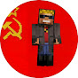
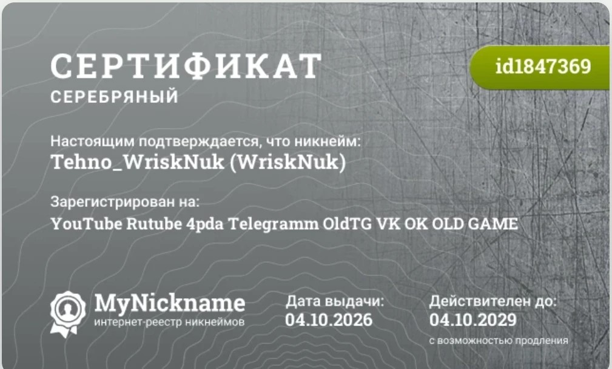

Весной 2023 года был создан канал на YouTube и RuTube. На YouTube канал получил название PC TECHNICIAN, на RuTube — WriskNuk TECHNICIAN. В дальнейшем оба канала были переименованы в Tehno_WriskNuk, а проекты стали выпускаться под брендом WriskNuk Corporation. Сейчас основное направление — работа с Windows 10 Mobile, другой техникой и общественно-политическими темами.
